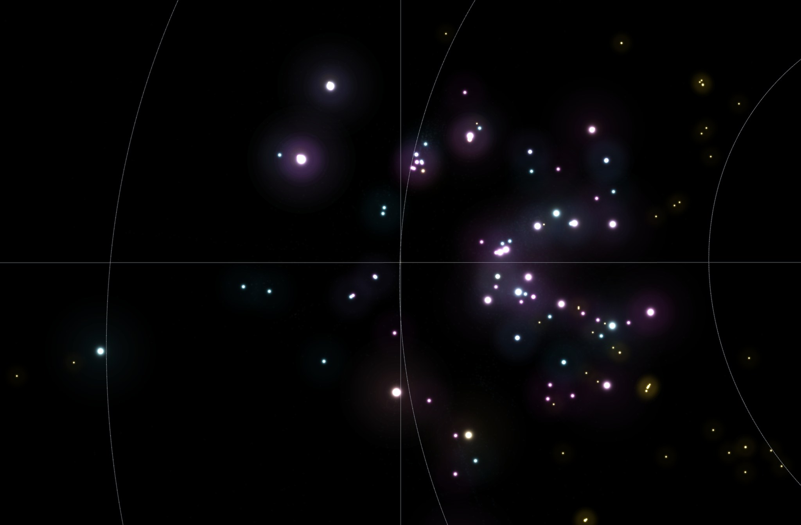
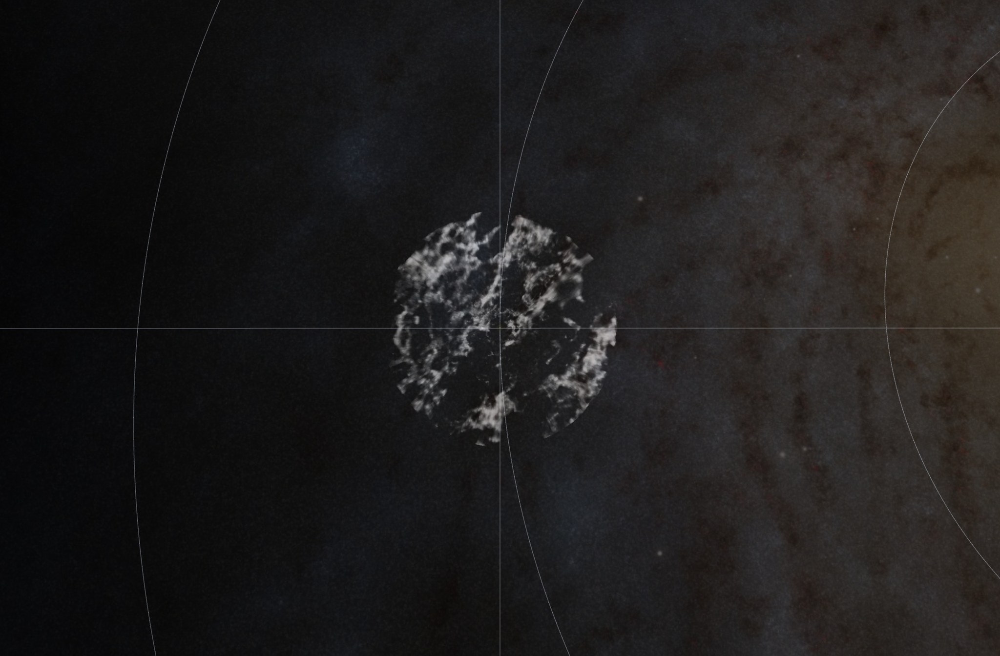
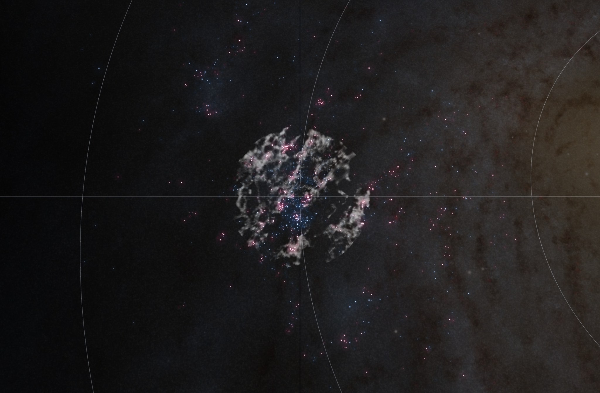
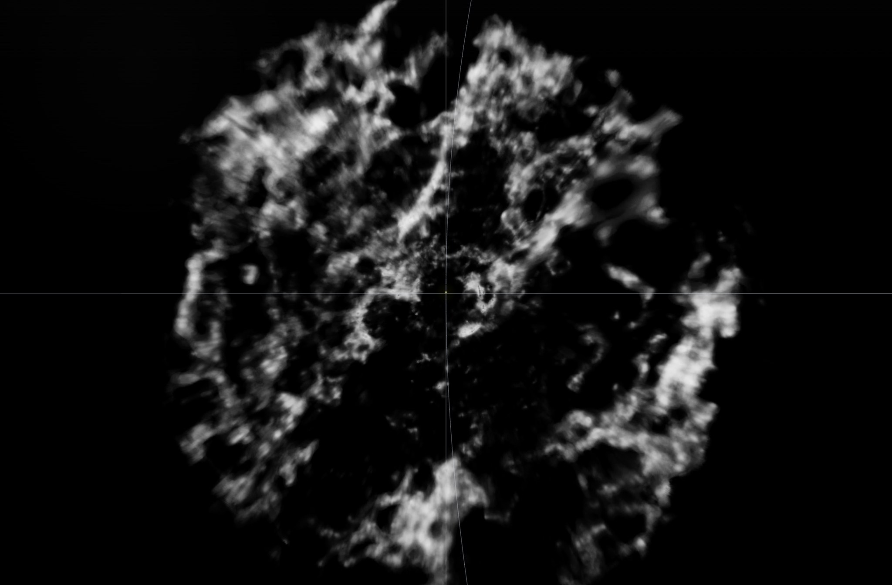
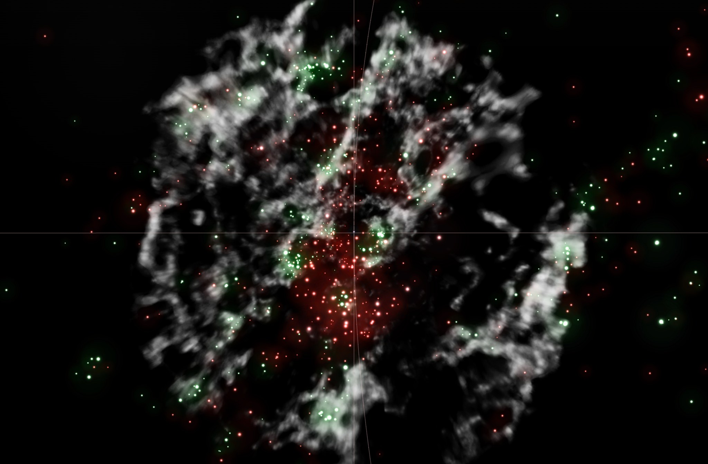
Slide 0 - Instructions :
To move slides, use the arrow keys or swipe on your mobile device
To see the speaker notes, press "s"
To go to full screen, press "f"
To print as PDF, go to this URL: ?print-pdf , then print. To get a PDF with speaker notes, add ?print-pdf&showNotes=true to the URL.
ALMA · radio light from cold dust
JWST · infrared light from stars
This is the center of our Galaxy, ~8,200 parsecs away. Let the picture sit for a moment.
Two telescopes: ALMA (radio, sees cold dust and gas) and JWST (infrared, sees stars).
Everything in this talk is somewhere in this picture.
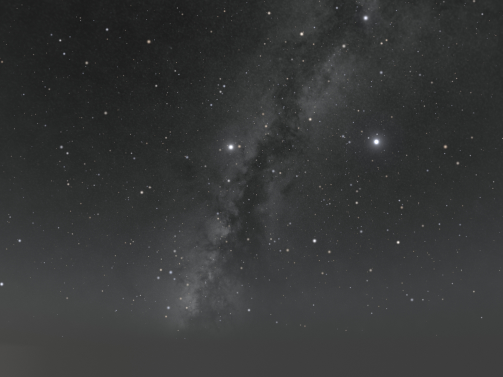
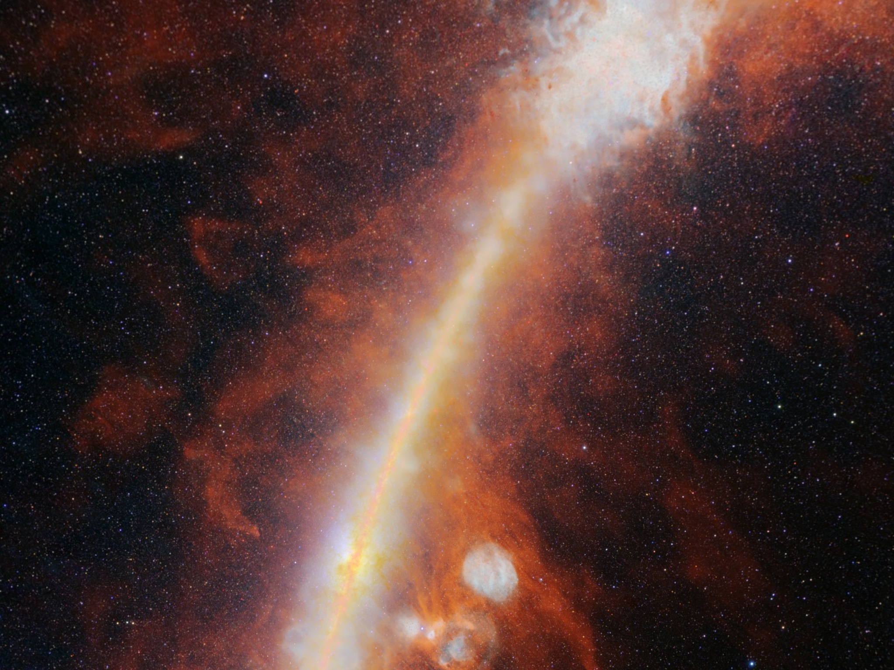
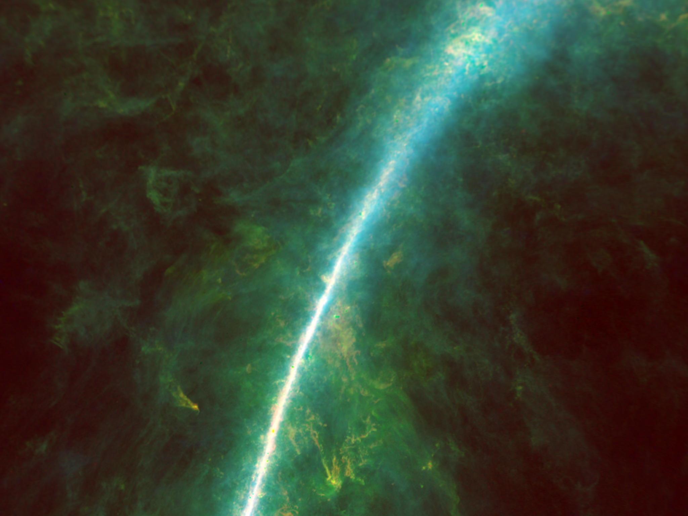
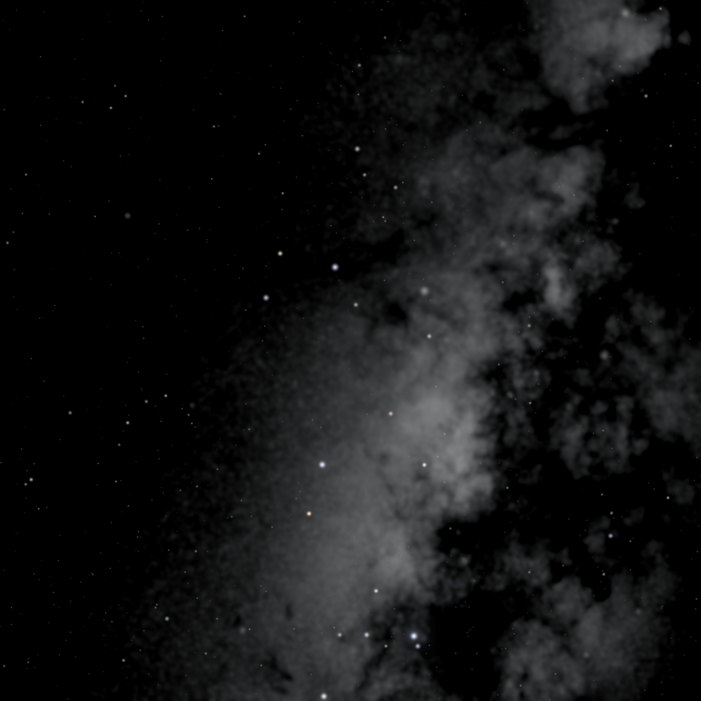
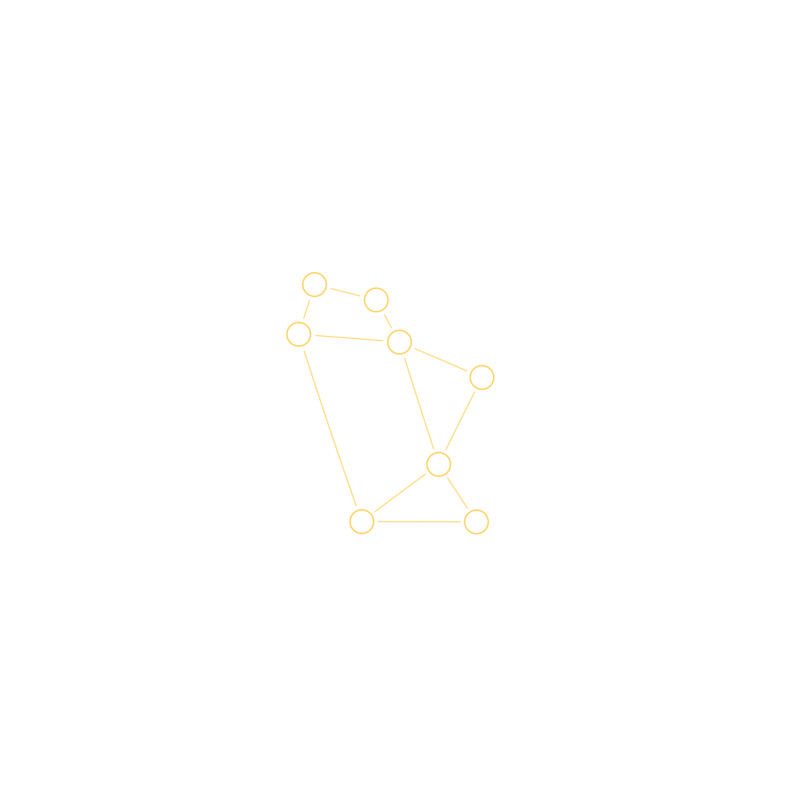
The Milky Way, as your eye sees it
The same sky, star by star: Gaia
The constellations
Toward the Galactic Center: Sagittarius Back to the whole sky
The Teapot
Tonight at 7 pm, looking southwest
In infrared light
In millimeter and radio light
Tonight: low in the southwest, right after dark
ESO/S. Brunier Gaia star colors via ESA Gaia star colors via ESA · constellation lines: d3-celestial (O. Frohn) Simulated sky: Gaia DR3 + Hipparcos (ESA) SPHEREx via NASA/JPL-Caltech Planck + HI4PI via lambda.gsfc.nasa.gov Gaia star colors via ESA
The whole sky: the Milky Way as your eye sees it from a dark site (ESO photo). The bright band is our own Galaxy, seen edge-on from inside; the Galactic Center is in the middle, behind the dark dust lanes.
Build 1: the same sky, mapped star by star by the Gaia satellite. Build 2: the constellations.
Build 3: Sagittarius. The spout of the Teapot points toward the Galactic Center.
Tonight the Teapot is low in the southwest after dark (~25° up at 6 pm, ~18° at 7 pm) and sets ~8:50 pm; the Galactic Center itself sets ~8 pm.
Build 5: zoom in on the Teapot; its eight stars circled.
Build 6: back out to tonight's view from here, 7 pm, looking southwest under a dark (Bortle 3) sky, simulated from the Gaia and Hipparcos star catalogs. The Galactic Center is ~10° up, just off the spout.
Build 7: the same view in infrared (SPHEREx), which sees through much of the dust.
Build 8: the same view in millimeter and radio light (Planck + HI4PI): the gas and dust between the stars.
Build 9: back out to the whole sky (Gaia). Next: what other kinds of light show there.
2MASS via IPAC SPHEREx via NASA/JPL-Caltech
The same sky in infrared light (2MASS): infrared gets through dust, so the crowded center appears.
Build: SPHEREx, a new NASA all-sky infrared survey.
Planck + HI4PI via lambda.gsfc.nasa.gov
The gas between the stars (Planck and HI4PI radio maps): red, green, and blue are atomic hydrogen, dust, and molecules.
Down arrow: each layer on its own — atomic hydrogen, dust, molecular gas.
Stars form from the molecular gas, which hugs the plane and piles up toward the center.
Atomic hydrogen gas
HI4PI
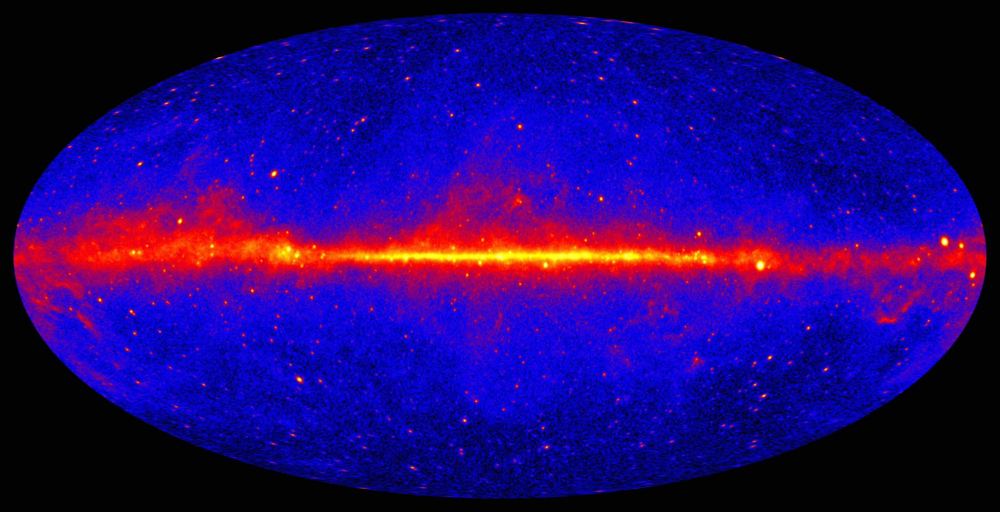
Gamma rays: the highest-energy light (Fermi)
An unexplained glow right at the center (2009). Dark matter? Pulsars? More later…
NASA/DOE/Fermi LAT Collaboration · inset: T. Linden (U. Chicago), NASA
Same sky again, now in gamma rays, the most energetic light, from NASA's Fermi satellite.
The Galaxy's disk glows: cosmic rays slamming into gas.
Build: zoom on the center. After removing every known source, there is extra glow left over (Goodenough & Hooper 2009). Still debated: dark matter or pulsars. We come back to it later.
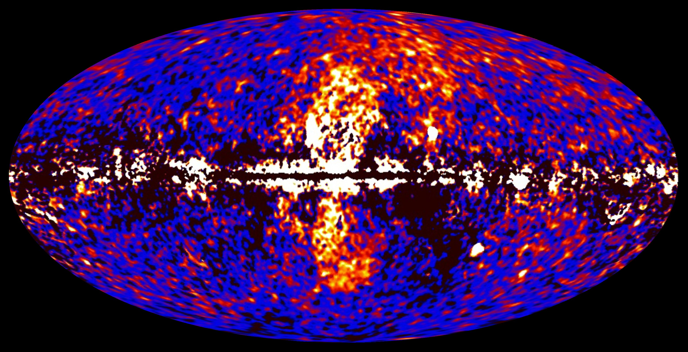
Gamma rays again: the “Fermi bubbles”
Two giant gamma-ray bubbles above and below the center (2010), each ~8,000 parsecs tall.
NASA/DOE/Fermi LAT/D. Finkbeiner+ · Su+ 2010
Gamma rays show giant bubbles above and below the center, found in Fermi data in 2010 (Su, Slatyer & Finkbeiner). We will see X-ray bubbles around them in a moment.
Something at the center blew these out: the black hole, or a burst of star formation.
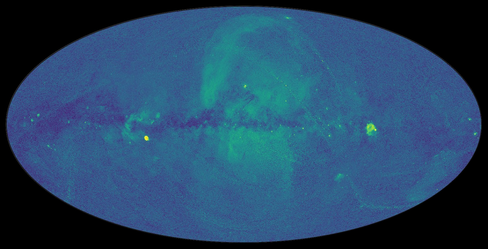
X-rays: gas at millions of degrees (ROSAT, 1990s)
A faint loop arcs high above the center…
ROSAT all-sky survey (MPE)
X-rays, from the German ROSAT satellite in the 1990s: gas heated to millions of degrees.
There is a hint of something huge rising above the center.
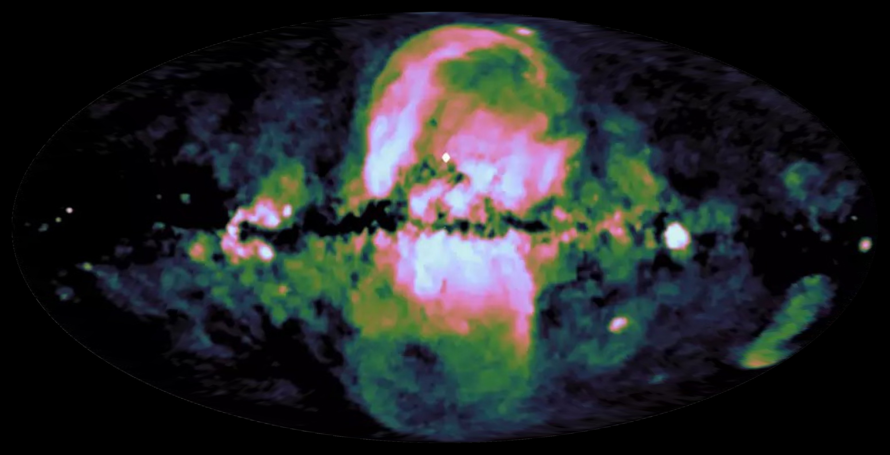
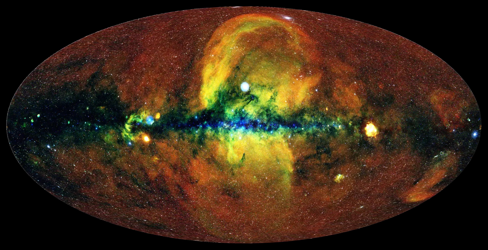
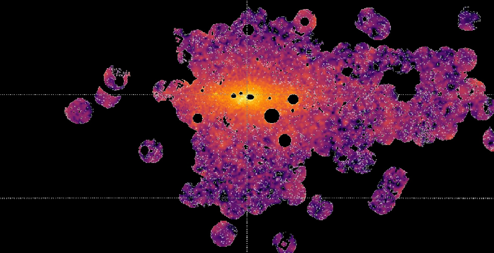
eROSITA (2020): two giant X-ray bubbles
Where do the bubbles start?
Zoom in on the center
The X-ray hot gas goes all the way to the center, tracing where the stars are
Each reaches ~14,000 parsecs from the plane. Energy: ~100,000 supernovae.
X-ray “chimneys” rise from the central ~15 parsecs. The black hole, or many exploding stars? Still debated.
Predehl+ 2020 (eROSITA, MPE/IKI)
Ponti+ 2019 (XMM-Newton, Chandra) · Predehl+ 2020
Predehl+ 2020 (eROSITA, MPE/IKI)
Anastasopoulou+ 2023 (XMM-Newton)
The eROSITA telescope mapped the X-ray sky much more deeply and found two enormous bubbles, above and below the center.
They reach ~14 kpc (14,000 parsecs) from the plane and hold ~1056 erg (Predehl+ 2020): roughly 100,000 supernovae' worth.
Build: the color version.
Build: the base of the bubbles: X-ray “chimneys” above and below Sgr A* (Ponti+ 2019, 2021). The launching region is the inner ~15 pc. The driver could be the black hole or supernovae; we don't know. The outflow carries ~0.6–0.8 solar masses of gas per year (Bordoloi+ 2017; Di Teodoro+ 2018, 2020).
Build: box on the central ~10° × 5°. Build: zoom to the XMM-Newton 6.7 keV (Fe XXV) map of that box, same sky coordinates.
The X-ray excess requires ~1.9× solar metallicity (Anastasopoulou+ 2023). Heavy elements are made in stars, so this gas has been through many generations of stars.
Next: ALMA’s view of the center.
The hot gas at the center is rich in heavy elements
ALMA + Green Bank: the central ring of gas (ACES + MUSTANG)
Cold dust glowing at 3 mm across the whole Central Molecular Zone, ~200 parsecs end to end.
Anastasopoulou+ 2023 (XMM-Newton)
ACES: the ALMA CMZ Exploration Survey (Longmore, Ginsburg+) · MUSTANG-2 (Green Bank Telescope)
Same X-ray map as the last slide. Build: where ALMA looked, ACES + GBT/MUSTANG at 3 mm, at its true position. Build: zoom in.
ALMA's survey of the central ring of gas, combined with the Green Bank Telescope's MUSTANG camera to keep the large-scale emission.
The brightest knots are Sgr B2 (left) and the region around Sgr A* (center). ~1.5° across: ~200 pc.
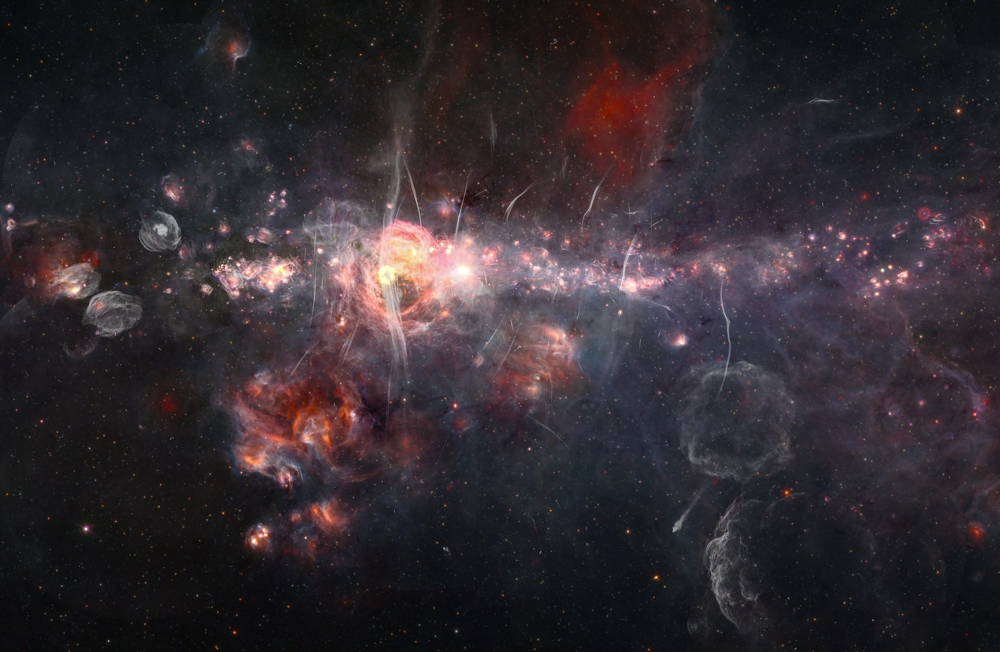
The Galactic Center has the most stuff , in the Galaxy and on the sky
MeerKAT radio: Heywood+ 2022 (SARAO) · combined with Spitzer by Judy Schmidt
Radio (MeerKAT, gray-white) plus infrared (Spitzer, red/orange): bubbles from exploded stars, star-forming clouds, and long thin radio filaments.
We'll come back to the filaments.
More questions, more answers
How far away is the stuff - what does it look like in 3D?
What's there, and how much? Stars, planets, gas, ...
We're learning new things all the time with new telescopes: ALMA, JWST, and soon Roman
Massive stars : bright, hot, short-livedsmall stars : dim, cool, live practically forever
Stars come in a range of types: massive stars are bright, hot, and short-lived; small stars are dim, cool, and live practically forever.
Left: mass and lifetime. A star 10× the Sun's mass lives only ~20 million years; the Sun lives ~10 billion.
Right: brightness vs. temperature (the Hertzsprung–Russell diagram), with one example star of each type: O B A F G K M.
One example of each type of star, on the sky
Gaia star colors via ESA · constellation lines: d3-celestial (O. Frohn)
The same example stars, on the sky. O: θ¹ Orionis C, in the Trapezium of the Orion Nebula. B: the Pleiades. A: Vega. F: Procyon. G: the Sun (and τ Ceti). K: 61 Cygni. M: Proxima Centauri (too faint for the eye).
Tonight: Vega and 61 Cygni are high in the west after dark; the Pleiades rise in the east around 6 pm; τ Ceti is low in the east-southeast; Orion rises ~9 pm and Procyon ~11 pm.
Almost all of the light in star-forming galaxies comes from massive stars
Andromeda, our neighbor galaxy (up in the east after dark tonight), in ultraviolet light.
Almost all of that light comes from a small number of young, massive stars.
Stars form from gas (seen here via its dust )
The same galaxy, now showing its dust. Dust traces the cold gas that stars form from.
Most of what we know about how stars form comes from small, nearby clouds
Most of what we know about how stars form comes from small, nearby clouds like Taurus, ~140 parsecs away.
Taurus is rising in the east this evening, next to the Pleiades.
How a star like the Sun forms (a cartoon)
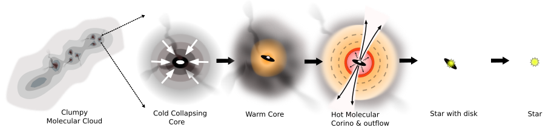
Missing: neighbors and environment
How a star like the Sun forms: a clump of gas collapses, spins up into a disk, and planets form in the disk.
What's missing from this picture: neighbors and environment.
The cartoon is not universal
Most stars are not born alone: Westerlund 1, the most massive young cluster in our Galaxy, ~4,000 parsecs away.
Thousands of stars, many of them massive, born together in a crowd.
cosmic noon
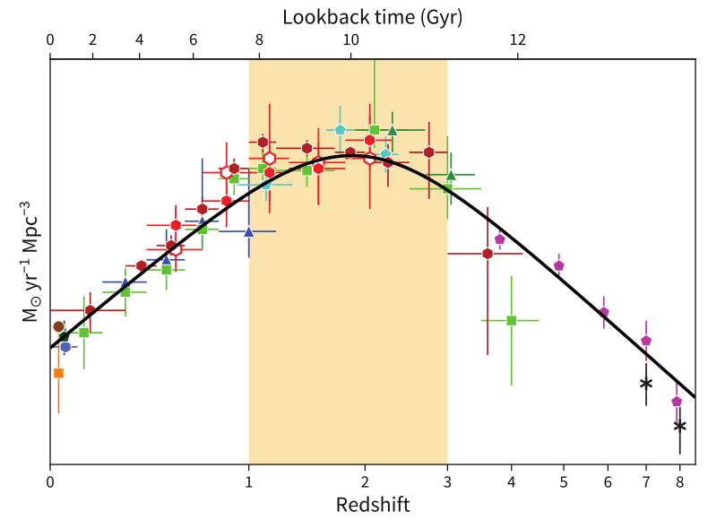
Star formation peaked ~10 billion years ago
Back then, stars formed in denser, more turbulent clouds
The Galactic Center is our nearest look at those conditions
Star formation in the universe peaked ~10 billion years ago.
Back then, stars formed in denser, more turbulent clouds than the ones near us.
The Galactic Center is the nearest place where we can see those conditions up close.
The solar neighborhood is not crowded
young star clusters: under 15
· under 60 million years
1,200 parsecs
Orion
Cepheus A
Our Galaxy seen from above, zooming in on the Sun's neighborhood: dust clouds (3D dust maps built from Gaia) and young star clusters.
Green: clusters younger than 15 million years; red: younger than 60 million years.
Our neighborhood is not crowded: a few young clusters within ~1,200 parsecs.
Seen from above: dust and young star clusters near the Sun
young star clusters: under 15
· under 60 million years
1,200 parsecs
Orion
λ Ori
Per OB2
NGC 2264
γ Vel · ζ Pup
Cep OB2 · IC 1396
Cep OB3
Berkeley 59
Coll 419
NGC 7000
Cam OB1
CMa OB1
Vela
Cir OB1
Ara OB1
NGC 6383
Sgr OB1
Rosette
(1,500 pc)
M8
(1,300 pc)
Labels: the familiar nearby star-forming regions, like Orion and Cepheus A.
The Galactic Center: open questions (a partial list)
question open since What makes the giant radio filaments? 1984 Q2 How does gas flow into the center? 1991 Q4 What shape is the central ring of gas? 1995 Q3 (How) does gas reach the black hole, Sgr A*? 1996 Was the black hole brighter in the recent past? 1996 What are the fast-moving compact clouds? 1998 Q7 Is the mix of star masses different here? 1999 Q6 Where do the center’s young stars go? 2002 How did the central disk of stars form? 2002 Why are there so many cosmic rays? 2005 Q8 Is the chemistry different? 2009 How does dust dim and redden the light? 2009 Is the extra gamma-ray glow dark matter, or pulsars? 2009 Where are the massive stars, and how many are there? 2010 Where do the lone massive stars come from? 2010 Q5 Why does the center form so few stars? 2013 Does star formation come in bursts? 2015 What accelerates the most energetic cosmic rays? 2016 Q1 What planets form there? 2016
A list of open questions about the Galactic Center, with the year each one was first asked.
Some are decades old. Today I'll walk through a handful of them.
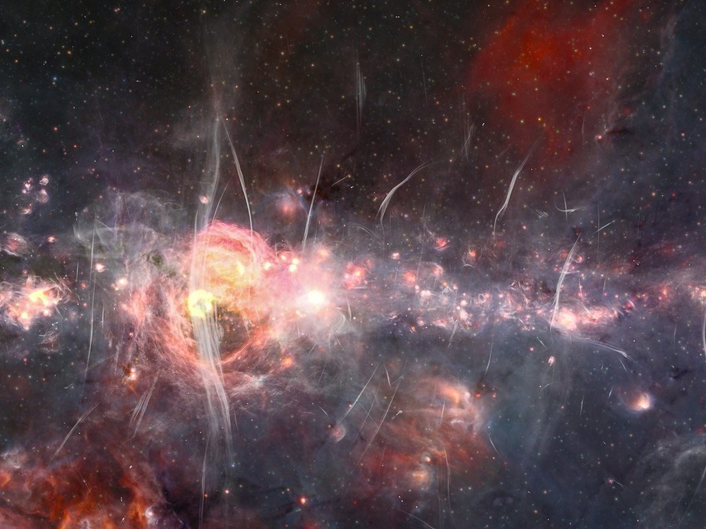
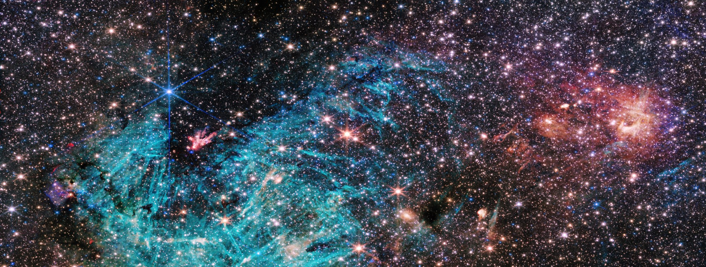
Sgr C
Mystery: giant radio filaments
~1,000 thin, straight threads, some ~30 parsecs longWhat makes them is still unknown.
MeerKAT: Heywood+ 2022, Yusef-Zadeh+ 2022 · image: Judy Schmidt
These thin, straight threads are seen in radio light at ~20 cm wavelength (MeerKAT). They are not seen anywhere else in the Galaxy like this.
First found in 1984 (Yusef-Zadeh, Morris & Chance). MeerKAT now shows nearly a thousand (Yusef-Zadeh+ 2022).
They glow because fast electrons spiral around magnetic field lines. Where the electrons come from, and why the fields are organized into threads, is not settled.
Build: JWST's view of Sgr C, at its true size and position. Build: turn it upright; next slide zooms in.
Mystery: star-forming bubbles shaped by magnetic fields?
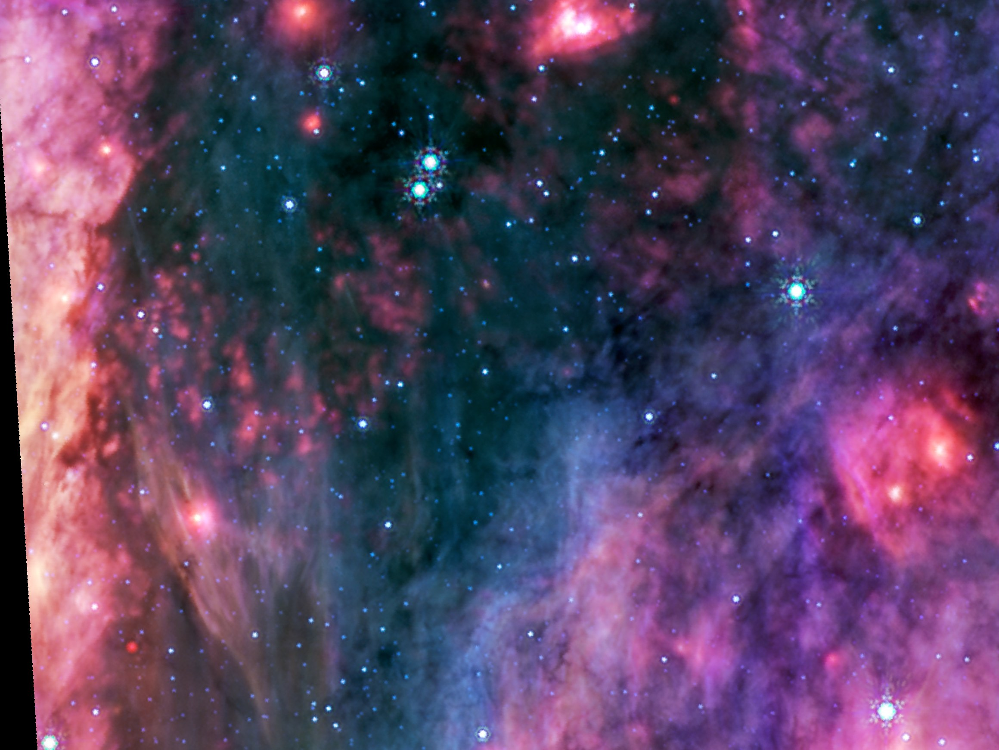
Sgr C: NASA, ESA, CSA, STScI, S. Crowe (UVA), J. Bally (CU), R. Fedriani (IAA-CSIC)
H II regions are bubbles of hot, ionized gas around newborn massive stars. In the disk of the Galaxy they look smooth and round.
In Sgr C, JWST shows the hydrogen gas pulled into strands. Crowe+ 2025 argue the CMZ's strong magnetic fields (~1 mG) confine it.
In Sgr B2 Deep South, radio maps show non-thermal (synchrotron) emission mixed with the hot gas: electrons accelerated at the bubble's edge, spiraling in magnetic fields (Meng+ 2019).
Whether magnetism changes how stars form here is open.
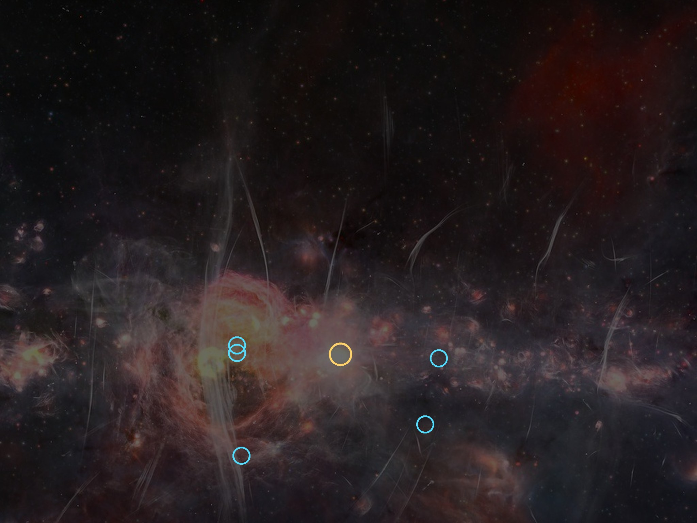
Mystery: where are the neutron stars?
← the magnetar,
108 –109 neutron stars predicted in the Milky Way: one for each massive star that has died
thousands found, almost all as pulsars
~6 known within ~30 parsecs of the center. The closest, a magnetar found in 2013, is 0.1 parsecs from Sgr A*.
Theory expects hundreds or more near the black hole.
Hidden behind blurring gas, or really missing?
Known pulsars: ATNF Pulsar Catalogue (Manchester+ 2005), Johnston+ 2006, Deneva+ 2009 · magnetar: Mori+ 2013, Eatough+ 2013 · MeerKAT: Heywood+ 2022 · image: Judy Schmidt
Every massive star that dies leaves a neutron star or black hole. Over the Galaxy's life that adds up to ~108 –109 neutron stars (e.g., Sartore+ 2010).
We've found only a few thousand, mostly as radio pulsars.
Near the center: five radio pulsars within ~15′ of Sgr A* (Johnston+ 2006; Deneva+ 2009), plus the magnetar SGR/PSR J1745−2900, 2.4″ from Sgr A* (found by Swift in 2013).
Predictions: ~100–1000 pulsars orbiting close to Sgr A* (Pfahl & Loeb 2004). The usual excuse is that turbulent ionized gas smears out the radio pulses, but the magnetar's pulses are less smeared than expected (Spitler+ 2014), so the “missing pulsar problem” is still with us (Dexter & O'Leary 2014).
Thousands of faint old pulsars might also explain the gamma-ray glow: next slide.
Mystery: is the gamma-ray glow dark matter?
Dark-matter particles that collide and annihilate would make gamma rays, brightest where dark matter is densest: the center.
Since 2009: an extra glow at about the right brightness and shape.
T. Linden (U. Chicago), NASA · Goodenough & Hooper 2009; Daylan+ 2016
If dark matter is a particle that can annihilate, the center is the best place to look: two particles must meet, so the signal grows as density squared.
Since 2009 Fermi data show an excess of ~1–3 GeV gamma rays around the center that fits a ~40 GeV particle with the “natural” annihilation rate (Daylan+ 2016).
But the excess only exists after subtracting a model of the whole gamma-ray sky, and it changes with that model.
Millisecond pulsars, old recycled neutron stars, have a similar spectrum; thousands too faint to see one by one would add up to a glow. Recent work finds the glow follows the bulge stars more than a round dark-matter halo (Macias+ 2018; Bartels+ 2018), but this is still argued.
The dark-matter density profile in the inner Galaxy is unknown, and dwarf galaxies have not shown a matching signal.
Mystery: antimatter at the center
When an electron meets its antimatter twin, a positron , both vanish into gamma rays of exactly 511 keV .
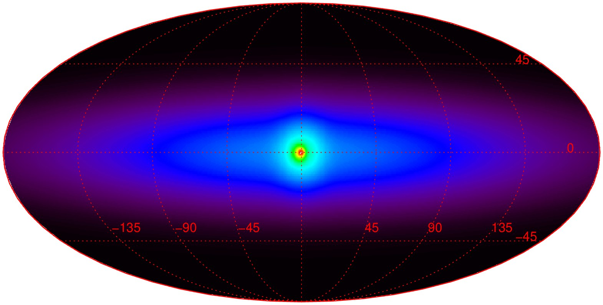
511 keV sky model, INTEGRAL/SPI (Siegert+ 2016)
Possible sources
Radioactive atoms from exploding stars
Black holes & neutron stars feeding on companions
Past outbursts of Sgr A*
Dark matter
Siegert+ 2016 (INTEGRAL/SPI)
The 511 keV line is the signature of positrons annihilating with electrons. Balloon experiments saw it from the Galactic Center in the 1970s; ESA's INTEGRAL mapped it.
INTEGRAL/SPI: 58σ detection; bright bulge, faint thick disk, and an unresolved central source at Sgr A* (Siegert+ 2016). The Galaxy needs a few × 1043 positrons per second.
Candidates: radioactive decay from supernovae and other stellar explosions (e.g., 44 Ti from faint thermonuclear supernovae in old stars, Crocker+ 2017), X-ray binaries and microquasars, past Sgr A* activity, pulsars, light dark matter.
Why it's hard: positrons can travel far before slowing down and annihilating, the bulge-heavy shape doesn't match where young stars are, and the instruments have ~2.7° resolution. COSI (NASA, 0.2–5 MeV) should map it better.
Three major surveys change our perspective
ALMA · ACES
Steve Longmore · John Bally · Cara Battersby · Adam Ginsburg · Jonathan Henshaw · Paul Ho · Izaskun Jiménez‑Serra · Betsy Mills · Daniel Walker · Ashley Barnes · Mattia Sormani · Robin Tress · Jennifer Wallace · Laura Colzi · Maya Petkova · Danya Alboslani · Emad Alkhuja · Jairo Armijos‑Abendaño · Lucia Armillotta · N. Bijas · Nazar Budaiev · Rojita Buddhacharya · Alyssa Bulatek · Michael Burton · Laura Busch · Natalie Butterfield · Paola Caselli · Mélanie Chevance · Claire Cook · Samuel Crowe · Ana Karla Díaz‑Rodríguez · Simon Dicker · Katarzyna Dutkowska · Adam Fairley · Christoph Federrath · Rubén Fedriani · Zi‑Xuan Feng · Karl Fiteni · Gary Fuller · Pablo García · Philipp Girichidis · Simon Glover · Javier Goicoechea · Mark Gorski · Savannah Gramze · Qi‑Lao Gu · Perry Hatchfield · Christian Henkel · Rebecca Houghton · Pei‑Ying Hsieh · Yue Hu · Katharina Immer · Namitha Issac · Desmond Jeff · Janik Karoly · Jens Kauffmann · Ralf Klessen · Diederik Kruijssen · Mark Krumholz · Cornelia Lang · Alex Lazarian · Rachel Lee · Emily Levesque · Fu‑Heng Liang · Dani Lipman · Xunchuan Liu · Xing Lu · Qiu‑yi Luo · Alessandro Lupi · Sera Markoff · Sergio Martín · Brian Mason · Farideh Mazoochi · Laura McCafferty · Emily Moravec · Mark Morris · Francisco Nogueras‑Lara · Marie Nonhebel · Tomoharu Oka · John Orlowski‑Scherer · Jürgen Ott · Marco Padovani · Xing Pan · Dylan Paré · Thushara Pillai · Jaime Pineda · Marc Pound · Denise Riquelme‑Vásquez · Víctor Rivilla · Charles Romero · Galaxy Salo · Álvaro Sánchez‑Monge · Miriam Santa‑Maria · Anika Schmiedeke · Rainer Schödel · Matthias Schultheis · Howard Smith · Yoshiaki Sofue · Jack Sullivan · Enrico Di Teodoro · Leonardo Testi · Volker Tolls · Miguel Requena Torres · Grant Tremblay · Arianna Vasini · Gijs Vermariën · Alexey Vikhlinin · Serena Viti · Q. Daniel Wang · Gwenllian Williams · Fengwei Xu · Qizhou Zhang · Suinan Zhang
8 papers so far (2025–26)
JWST survey
Rainer Schödel · Steve Longmore · Adam Ginsburg · Konstantina Anastasopoulou · Jay Anderson · John Bally · Ashley Barnes · Cara Battersby · Alessandra Mastrobuono Battisti · Giuseppe Bono · Aaron Bryant · Santi Cassisi · Mélanie Chevance · Anna Ciurlo · Angela Cotera · Samuel Crowe · Tuan Do · Rubén Fedriani · Anja Feldmeier‑Krause · Sebastiano von Fellenberg · Lucia Bravo Ferres · Dimitri Gadotti · Carme Gallart · Teresa Gallego‑Calvente · Eulalia Gallego‑Cano · Pablo García · Angela Gardini · Abhimat Gautam · Andrea Ghez · Stefan Gillessen · Miguel Cano González · Alessia Gualandris · Robert Gutermuth · Daryl Haggard · Matthew Hankins · Jonathan Henshaw · Matthew Hosek · Rebecca Houghton · Yue Hu · Tracy Huard · Ralf Klessen · Diederik Kruijssen · Ryan Lau · Alex Lazarian · Rebecca Levy · Mattia Libralato · Anan Lu · Jessica Lu · Xing Lu · Nora Luetzgendorf · John Magorrian · Shifra Mandel · Roeland van der Marel · Macarena García Marín · Sera Markoff · Alvaro Martinez · Maria Melamed · Betsy Mills · Kaya Mori · Mark Morris · Elena Murchikova · Paco Najarro · David Nataf · Nadine Neumayer · Shogo Nishiyama · Francisco Nogueras‑Lara · Dylan Paré · Florian Peissker · Maya Petkova · Thushara Pillai · Gabriele Ponti · Rodrigo Contreras Ramos · R. Michael Rich · Carlos Román‑Zúñiga · Michael Rugel · Nils Ryde · Nadeen Sabha · Joel Sánchez‑Bermúdez · Álvaro Sánchez‑Monge · Matthias Schultheis · Stephen Serjeant · Lijing Shao · Janet Simpson · Mattia Sormani · Christopher Sorrell · Jonathan Tan · Enrico Di Teodoro · Brian Thorsbro · Pablo Torne · Robin Tress · Elena Valenti · Sill Verberne · Pierre Vermot · Eduardo Vitral · Gunther Witzel · Siyao Xu · Farhad Yusef‑Zadeh · Michal Zajacek · Qizhou Zhang · Manuela Zoccali
half done (Sep 2026); the rest in 2027
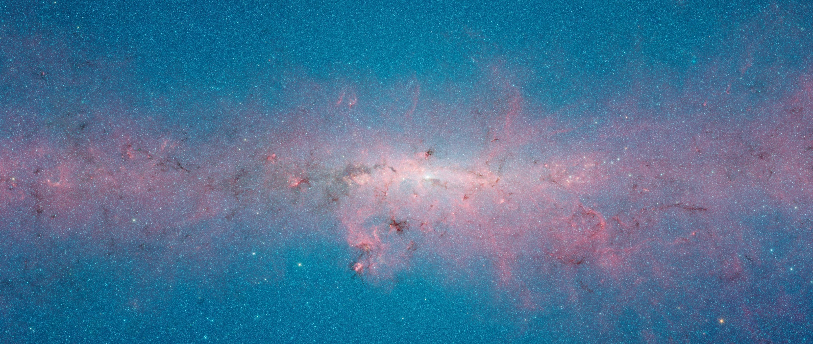
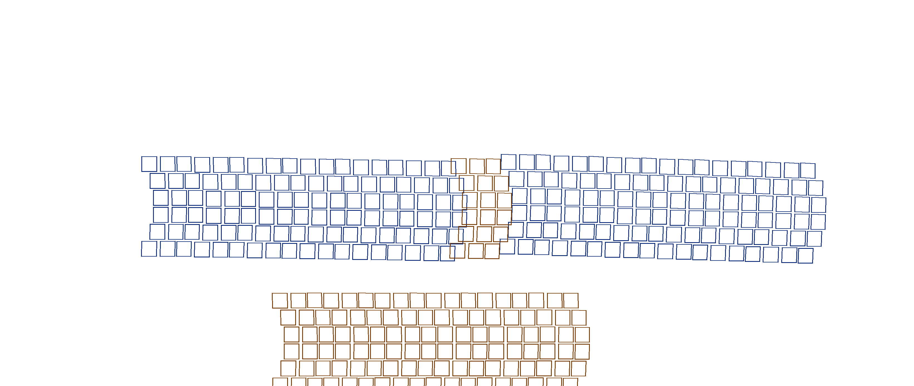
Roman surveys
et al.
coming
Repeated images of the inner Galaxy: star motions, variable stars, and planets.
Three big surveys are changing the picture: ALMA (radio), JWST (infrared), and soon NASA's Roman telescope.
We measure the gas with ALMA and the stars with JWST; Roman will watch hundreds of millions of stars over time.
The Galactic Center: open questions (a partial list)
question open since What makes the giant radio filaments? 1984 Q2 How does gas flow into the center? 1991 Q4 What shape is the central ring of gas? 1995 Q3 (How) does gas reach the black hole, Sgr A*? 1996 Was the black hole brighter in the recent past? 1996 What are the fast-moving compact clouds? 1998 Q7 Is the mix of star masses different here? 1999 Q6 Where do the center’s young stars go? 2002 How did the central disk of stars form? 2002 Why are there so many cosmic rays? 2005 Q8 Is the chemistry different? 2009 How does dust dim and redden the light? 2009 Is the extra gamma-ray glow dark matter, or pulsars? 2009 Where are the massive stars, and how many are there? 2010 Where do the lone massive stars come from? 2010 Q5 Why does the center form so few stars? 2013 Does star formation come in bursts? 2015 What accelerates the most energetic cosmic rays? 2016 Q1 What planets form there? 2016
The questions I'll focus on today are highlighted. Each one gets a short “question card”.
Q1 What planets form there? 2016 ← Q2 How does gas flow into the center? 1991 Q3 (How) does gas reach the black hole, Sgr A*? 1996 Q4 What shape is the central ring of gas? 1995 Q5 Why does the center form so few stars? 2013 Q6 Where do the center’s young stars go? 2002 Q7 Is the mix of star masses different here? 1999 Q8 Is the chemistry different? 2009
Question 1: what planets form there?
Almost every planet we know is within ~1,000 parsecs of the Sun
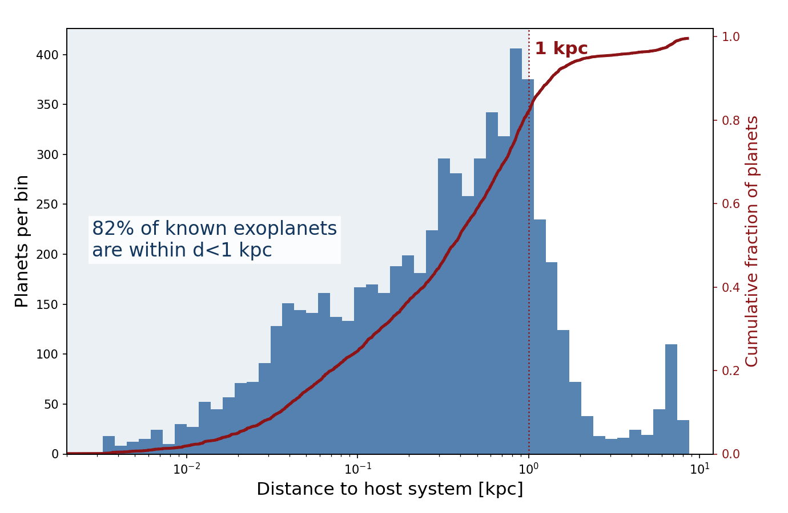
NASA Exoplanet Archive, Sept 2026
Almost every planet we know of is within ~1,000 parsecs of the Sun: a tiny corner of the Galaxy.
Roman will find tens of thousands of planets ~8,000 parsecs away
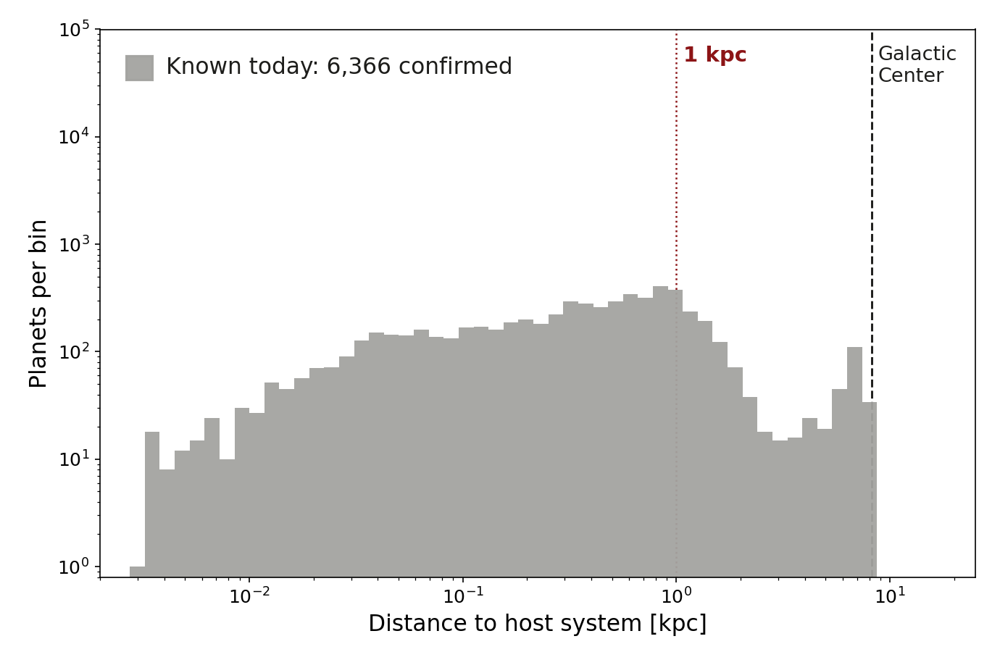
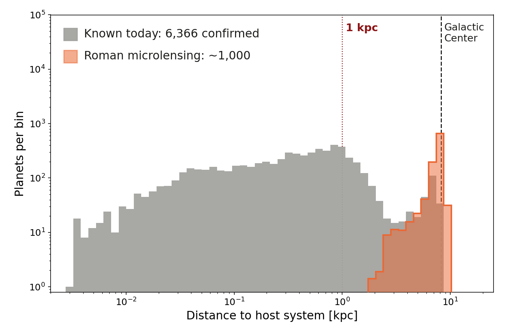
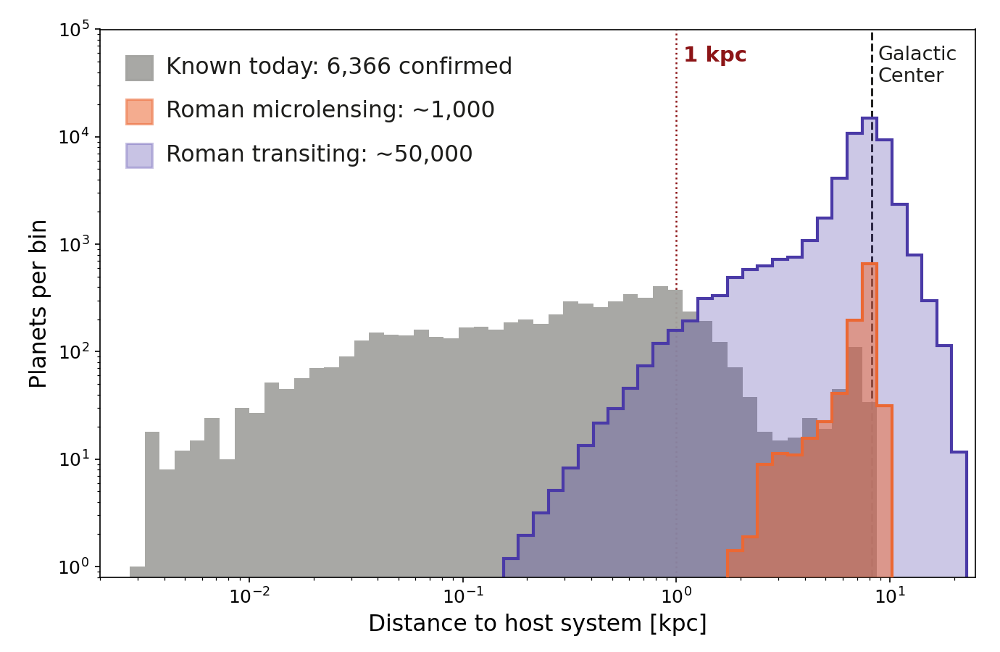
(not counting any found in the Galactic Center field)
Planets within ~1,000 parsecs: 82% of those known today → ~10% after Roman
Roman will find tens of thousands of planets ~8,000 parsecs away, toward the center, using microlensing:
a foreground star with planets briefly magnifies a background star as they line up.
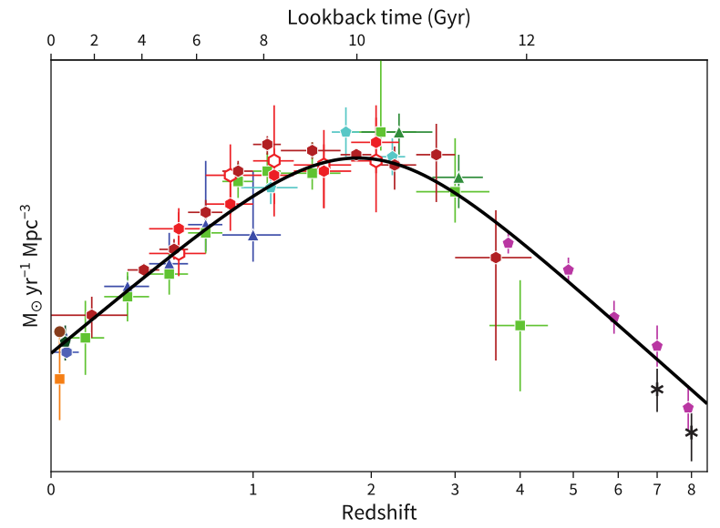
?
What happens to
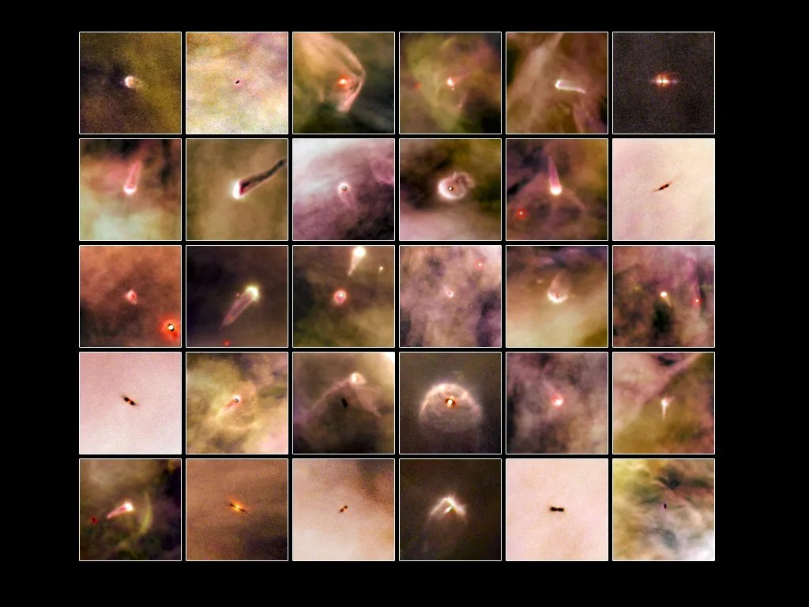
Proplyds: disks boiled away by nearby massive stars
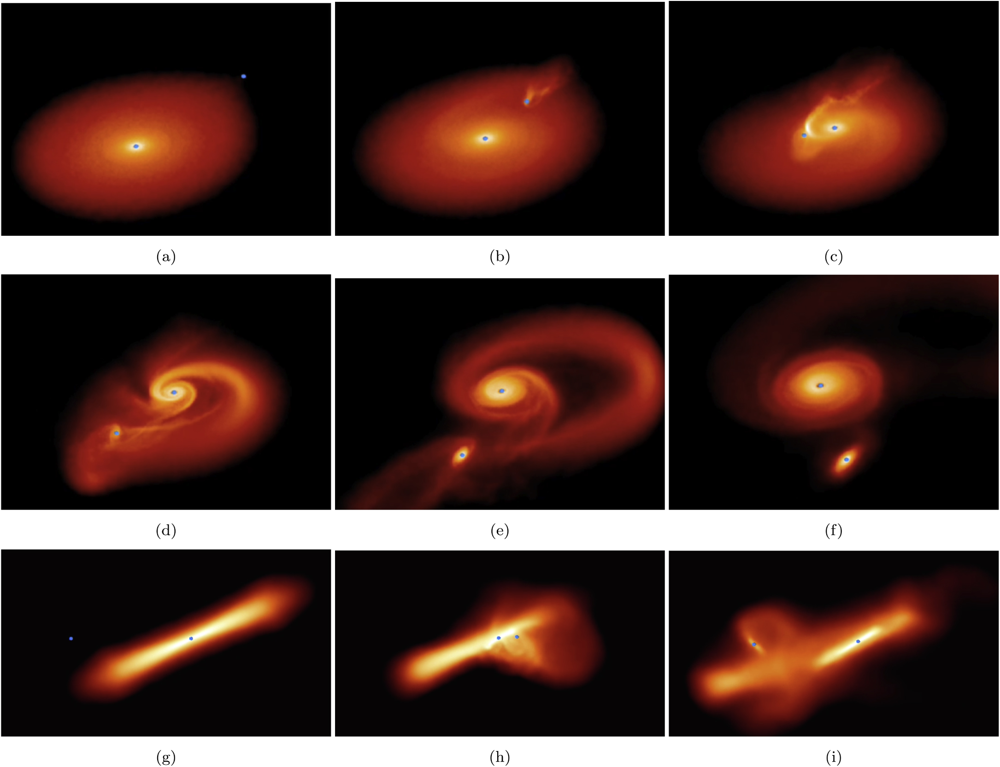
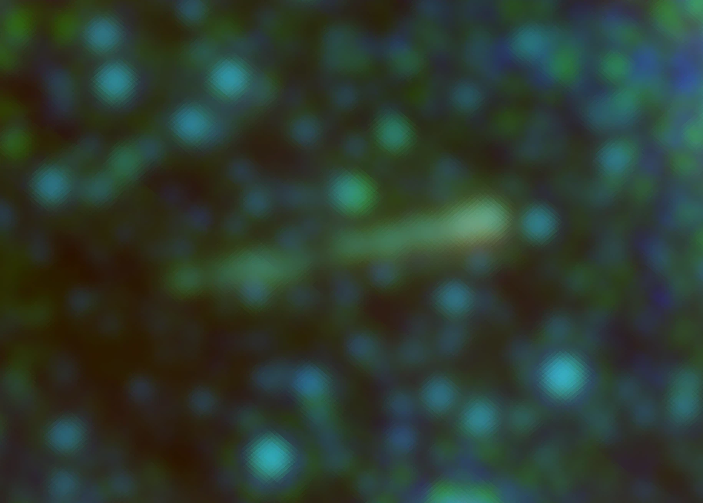
Disks with tails in the Arches clusterHosek+ in prep
EWOCS : JWST in Westerlund 1 & 2
Monsch et al.,Lovell , Galarza
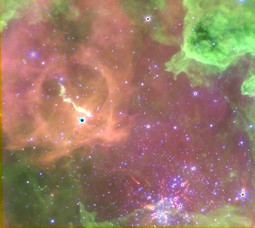
Wd1
Wd2
What happens to planet-forming disks in crowded, extreme places?
Builds: in Orion, disks are boiled away by nearby massive stars; disks can be trimmed by surrounding gas; in the Arches cluster near the center, disks have tails.
Planet-forming disks exist in the center
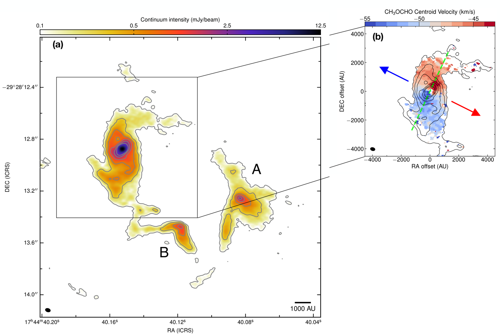
Sgr C
We can study planet formation in this environment.
Planet-forming disks do exist in the center. The one in Sgr C is 2,000× the Earth–Sun distance across, around a star of 32 Suns.
Hundreds detected, only a few resolved. So far we can only see the biggest disks.
Soon: what fraction of young stars there have disks?
Q1 What planets form there? 2016 future! Q2 How does gas flow into the center? 1991 progress Q3 (How) does gas reach the black hole, Sgr A*? 1996 future Q4 What shape is the central ring of gas? 1995 ← Q5 Why does the center form so few stars? 2013 Q6 Where do the center’s young stars go? 2002 Q7 Is the mix of star masses different here? 1999 Q8 Is the chemistry different? 2009
Question 4: what shape is the central ring of gas?
Distance: astronomy's most fundamental question
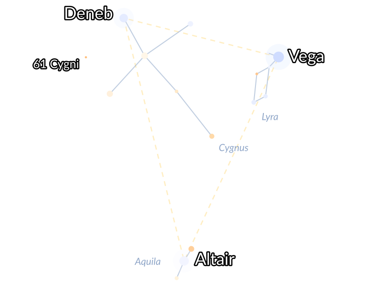
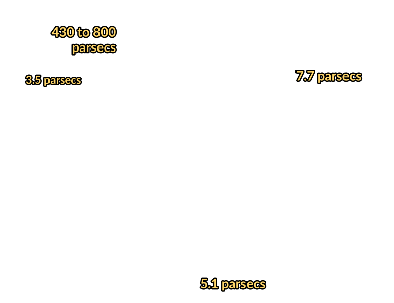
Overhead tonight: the Summer Triangle
Vega and Deneb look similar, but Deneb is 50 to 100 times farther away
→ Deneb gives off more than 1,000× as much light as Vega
Look up after the talk: the Summer Triangle is high overhead after dark — Vega, Deneb, and Altair.
Vega and Deneb are both among the brightest stars in the sky. But Vega is 7.7 parsecs away, and Deneb ~430 to 800.
So Deneb must give off more than 1,000× as much light. Without the distance, you can't tell a nearby dim star from a distant brilliant one.
That's why distance is the most fundamental thing we measure: brightness, size, mass, and age all depend on it.
Measuring distance: parallax
faraway stars
Sun
Earth in January
Earth in July
a nearby star
Blink one eye, then the other: your thumb jumps against the background
Earth's orbit gives us two “eyes” 300 million km apart
Hold up a thumb and blink one eye, then the other: the thumb jumps against the background. The closer it is, the bigger the jump.
Builds: we do the same with Earth's orbit — look in January, look again in July, from 300 million km apart.
1838: Friedrich Bessel measured the first one, for 61 Cygni (in Cygnus, overhead tonight; visible to the eye from a dark site). The shift is tiny: a dime seen from 13 km away. That means about 3.5 parsecs.
Gaia (2013–2025): distances to 1.5 billion stars
best: a dime seen from 160,000 km (4 laps around the earth) away
But dust dims the Galactic Center's visible light a trillion times
Gaia star colors via ESA
The Gaia satellite (2013–2025) measured parallaxes for about 1.5 billion stars. The best are precise to a dime seen from 160,000 km.
But toward the center, dust dims visible light by a factor of about a trillion. Gaia can't see the center at all.
So we have to use other tricks: infrared and radio light get through the dust.
What you can see toward Sagittarius, by distance
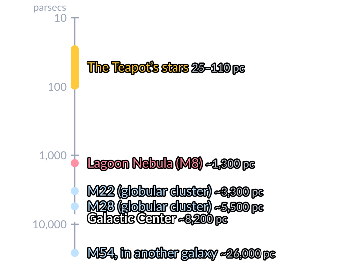
Looking toward Sagittarius, you look through the whole Galaxy at once.
The Teapot's stars: 25–110 parsecs. The Lagoon Nebula (M8): ~1,300. The globular clusters M22 and M28: ~3,300 and ~5,500.
The Galactic Center: ~8,200 parsecs. And M54 isn't even in our Galaxy: it belongs to the Sagittarius dwarf galaxy, ~26,000 parsecs away, which is being torn apart by the Milky Way.
The best distance to the center: a star orbiting the black hole
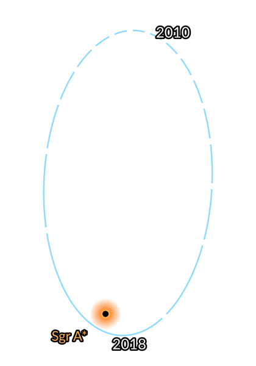
The star S2 orbits the center every 16 years
→ a black hole of 4 million SunsNobel Prize 2020: Reinhard Genzel & Andrea Ghez
Orbit size in angle + orbit size in kilometers (from its speed) → 8,200 parsecs , within a few percent
We measure velocity through Doppler shift and sky motion by watching the orbit, giving distance.
orbit: GRAVITY Collaboration 2020
Stars around the black hole, 1995–2026
Observed (green label): Keck/NIRC2 (Keck Observatory Archive), VLT/NACO (ESO archive), JWST/NIRCam (MAST) images, aligned for this talk; GRAVITY images from Abd El Dayem et al. 2026. In between: the nearest real image with stars moved along published orbits and motions (Gillessen et al. 2017; GRAVITY Collaboration 2021; Abd El Dayem et al. 2026), blurred as that instrument measured. Before 2002: model at the 1998 Keck speckle resolution.
S2 and S301, 1995–2030
Positions from published orbits (Gillessen et al. 2017; GRAVITY Collaboration 2021; Abd El Dayem et al. 2026), drawn at GRAVITY resolution. Bright bar: years with observations; dim bar: orbit extrapolated backward or forward in time.
The best distance to the center comes from a star, S2, that orbits the central black hole every 16 years.
Its orbit tells us the black hole's mass: 4 million Suns (Nobel Prize 2020, Reinhard Genzel and Andrea Ghez).
We measure the orbit's size as an angle on the sky, and its size in kilometers from the star's speed (Doppler shift). Together: ~8,200 parsecs, within a few percent.
Build: thirty years of resolution. Snapshots labeled "Observed" are real images (Keck, VLT, and JWST archival data, then GRAVITY images from the S301 discovery paper). In between, each frame is the nearest real image with the cataloged stars moved along their published orbits and motions, so it keeps that instrument's own blur (circle in the corner) and depth; everything before 2002 is a model using the resolution measured in 1998 Keck speckle data. The progression is not strictly sharper each step: Keck speckle in 1998 already had a ~55 milli-arcsecond core but was shallow, VLT adaptive optics ~75, Keck laser-guide-star adaptive optics ~50–65, and JWST (6.5 m mirror) ~75; the leap is GRAVITY, where stars are about 3 milli-arcseconds across, roughly 20 times sharper than a single 8–10 m telescope (zoom, rewinding to 2021). The last frame draws the orbits of S2 (16 years; closest approach in 2018) and S301 (8.7 years).
Next build: the same zoom on just those two stars, 1995–2030, two years per second. Bright part of each bar on the timeline = years with observations; dim = orbit extrapolated back (S301 before 2021) or forward (everything after 2025). White diamonds mark closest approach: S2 in 2002 and 2018 (next 2034), S301 every 8.7 years (1997, 2005, 2014, 2023, next 2032).
We know our neighborhood in 3D, but not the Galactic Center
Tress+ 2026 : a simulation seen from above, ~1,000 parsecs across, over 125 million years
We know our neighborhood in 3D, but not the Galactic Center: we see it from the side, through the disk.
People have proposed very different shapes: a twisted ring, spiral arms, nested orbits.
Progress: a 3D map of the central ring, 2025–26
~3/4 of known clouds are in front of the black hole
For most clouds, the best we can say is "in front"
Most of the gas isn't in clouds, so we can't place it yet
Progress: a 3D map of the central ring. About 3/4 of the known clouds are in front of the black hole.
But most of the gas isn't in clouds, so we can't place it yet.
Roman will track the motions of tens of millions of stars: a new way to map the gas in 3D
□ Roman Galactic Center survey □ Roman bulge survey
Roman will track the motions of tens of millions of stars. Stars behind the gas look redder and dimmer, so they map the gas in 3D.
Mapping the gas in 3D with moving stars
Stars circle the center: on the near side they drift one way across the sky, on the far side the other way
A cloud of gas dims and reddens the stars behind it
Which stars are dimmed tells us where the cloud sits, to within ~10 parsecs
Orbits: Nieuwmunster+ 2024; method: Vasini+ 2026
A view from above the Galactic Center: the Sun is at left. Stars orbit the center; color is how they move across our sky.
Stars on the near side move one way, stars on the far side move the other way (~5 mas/yr apart).
The purple patch is a cloud. Stars behind it fade. If the faded stars are the far-side movers, the cloud is in front of the center, and vice versa.
With Roman's tens of millions of stars, this places clouds to ~10 pc along the line of sight (Vasini+ 2026).
Q1 What planets form there? 2016 future! Q2 How does gas flow into the center? 1991 ← Q3 (How) does gas reach the black hole, Sgr A*? 1996 Q4 What shape is the central ring of gas? 1995 Q5 Why does the center form so few stars? 2013 Q6 Where do the center’s young stars go? 2002 Q7 Is the mix of star masses different here? 1999 Q8 Is the chemistry different? 2009
Question 2: how does gas flow into the center?
The bar feeds the center
Back to the top-down view: our Galaxy has a bar of stars in the middle.
The bar feeds gas into the center.
The bar feeds the central ring
Gas falls along the bar's dust lanes: about one Sun's worth per year
About a third lands on the ring on its first pass; the rest overshoots
Hatchfield+ 2021
...and hits the far side dust lane
simulation: D. Lipman
Gas falls along the bar's dust lanes into the center: about one Sun's worth of gas per year.
About a third lands on the central ring on its first pass; the rest overshoots and crashes into the far side.
Simulation by Dani Lipman.
Q1 What planets form there? 2016 future! Q2 How does gas flow into the center? 1991 progress Q3 (How) does gas reach the black hole, Sgr A*? 1996 ← Q4 What shape is the central ring of gas? 1995 Q5 Why does the center form so few stars? 2013 Q6 Where do the center’s young stars go? 2002 Q7 Is the mix of star masses different here? 1999 Q8 Is the chemistry different? 2009
Question 3: does gas reach the black hole, and how?
The central black hole barely eats
Sgr A*: 4 million Suns
Gas flowing into the center along the bar: ~1 Sun's worth per year
What the black hole swallows: less than a millionth of that
Where does the rest go?
EHT Collaboration / ESO, CC BY 4.0
The Event Horizon Telescope's image of Sgr A*, the black hole at the center: 4 million Suns.
About one Sun's worth of gas per year flows into the center along the bar.
But the black hole swallows less than a millionth of that. Where does the rest go? Into new stars? Blown back out? That's question 3.
Is gas flowing in toward the black hole?
Some fast-moving gas features are shocks : gas crashing into gas
— Lipman+ 2026
Future: Roman 3D maps; detailed simulations
Is gas flowing in toward the black hole?
Some fast-moving gas features are shocks: gas crashing into gas. There are hints of gas flowing inward.
Next: Roman's 3D maps and detailed simulations.
Q1 What planets form there? 2016 future! Q2 How does gas flow into the center? 1991 progress Q3 (How) does gas reach the black hole, Sgr A*? 1996 future Q4 What shape is the central ring of gas? 1995 progress Q5 Why does the center form so few stars? 2013 ← Q6 Where do the center’s young stars go? 2002 Q7 Is the mix of star masses different here? 1999 Q8 Is the chemistry different? 2009
Question 5: why does the center form so few stars?
The central ring of gas
Gas: 50 million Suns' worth · new stars: ~1 Sun's worth per decade
>1/3 of its stars are born in clusters that stay together (3–8× the local rate)
About half of its star formation happens in one cloud: Sgr B2
We're going to zoom in ~300× to count young stars.
The central ring of gas: 50 million Suns' worth of gas, but it makes only about one Sun's worth of new stars every 10 years.
About half of that happens in one cloud, Sgr B2. Let's zoom in ~300× and count young stars.
Sgr B2 with JWST/
NIRCam
MIRI
on MeerKAT radio: glowing gas around massive stars
Clusters forming now
Sgr B2 with JWST, on top of a MeerKAT radio image: the glowing gas marks massive stars.
Builds: the clusters that are forming right now.
MIRI sees massive young stars still buried in dust
JWST's mid-infrared camera, MIRI, sees massive young stars still buried in their dust.
JWST sees an outflow:
the first infrared light from deep inside Sgr B2 North
a cluster of ~3,000 Suns, still gaining ~1 Sun's worth of gas every 10 years
An outflow from Sgr B2 North: the first infrared light we've seen from deep inside it.
A cluster of ~3,000 Suns that is still growing.
The puffy red stuff, only at 25μm, is still a mystery
JWST: slightly older young stars, spread out
ALMA: stars forming right now, still buried
◯ JWST: young stars with warm dust (Budaiev+ 2026)
■ ALMA: forming stars (Ginsburg+ 2018, Budaiev+ 2024, Daley+ in prep)
━ JWST: where young stars are most crowded
Two kinds of young stars: JWST finds the slightly older ones, spread out; ALMA finds the ones forming right now, still buried.
The puffy red stuff, seen only at the longest JWST wavelength, is still a mystery.
Star formation in Sgr B2 is lopsided: JWST and ALMA see different sides
The transition is sharp
Star formation is ongoing
Lopsided because the cloud is being squeezed or hit
Still open: why does a collision make stars?
Star formation in Sgr B2 is lopsided: JWST and ALMA see different sides, with a sharp transition.
Probably because the cloud is being squeezed or hit. Open question: why does a collision here make stars?
Gas and young stars can go separate ways
(a) A cluster forms, perhaps where the bar's gas hits the ring
(b) The new stars blow a hole in the cloud, but don't destroy it
(c) The gas is pushed around and stays on circular orbits; the stars drift off
(d) stars may drift back and affect a different cloud
A simulation (Robin Tress): gas and young stars can go separate ways.
The new stars blow a hole in the cloud but don't destroy it; the gas keeps orbiting while the stars drift off.
Sgr B2 is forming stars — is the rest of the center?
6–11× fewer than expected
stars the gas should make
Expected from the amount of dense gas: 0.4 to 0.8 Suns' worth of new stars per year Expected from the amount of dense gas: 0.4 to 0.8 Suns' worth of new stars per year 0.4–0.8
stars we count
Counted from young stars: about 0.07 Suns' worth of new stars per year ~0.07
0 0.2 0.4 0.6 0.8 Suns' worth of new stars per year
Henshaw+ 2023; Longmore+ 2013
Sgr B2 is busy. What about the rest of the center?
From the amount of dense gas, we'd expect 0.4–0.8 Suns' worth of new stars per year. We count ~0.07: 6–11× fewer.
JWST looked at a few of the center's clouds before 2026
Before 2026, JWST had looked at only a few of the center's clouds. Let's tour them.
Sgr B2: >500 young stars forming (ALMA)
~100 bubbles of glowing gas around new massive stars
Ginsburg+ 2018, Jeff+ 2024, Budaiev+ 2024, 2025, 2026, Daley+ in prep
Sgr B2: more than 500 young stars forming (ALMA), and ~100 bubbles of glowing gas around new massive stars.
Cloud E/F: 100,000 Suns' worth of gas, maybe 1 young star
Houghton, Esteve, Gutermuth, Longmore, Huard, Kauffmann subm.
Cloud E/F: 100,000 Suns' worth of gas, and maybe one young star.
Clouds C & D: 100,000 Suns' worth of gas, one small cluster
Gramze+ in prep
Clouds C and D: also 100,000 Suns' worth of gas, with one small cluster.
The Brick: 100,000 Suns' worth of gas, about 10 young stars
Walker+ 2021
The Brick: 100,000 Suns' worth of gas, so dense it blocks the infrared light behind it, and only about 10 young stars.
Stars are forming in the center, but we've only checked a small part of it
So: stars are forming in the center, but so far we've only checked a small part of it.
The JWST Galactic Center Treasury Survey (GO 10678) — NIRCam: half observed
When did the stars form?
Where are the dust and gas?
Finding young stars
■ observed Sep 2026 (68) ■ planned Aug–Sep 2027 (64) ■ skipped, to be rescheduled (7) status 2026-10-15
That's why we're mapping the whole center with JWST: the Galactic Center Treasury Survey. Half of it was observed this September.
Goals: when did the stars form, where are the dust and gas, and where are the young stars?
…and the same survey with MIRI
Finding young stars
How new stars heat their surroundings
■ observed Sep 2026 (68) ■ planned Aug–Sep 2027 (64) ■ skipped, to be rescheduled (7) status 2026-10-15
The longer-wavelength part of the survey, with MIRI: young stars, and how new stars heat their surroundings.
Progress:
Half observed, Sep 2026
two infrared colors
the rest: Aug–Sep 2027
Early highlights
~4 million stars so far
positions precise to a dime seen from 3,200 km
star motions, by comparing with earlier JWST images
□ observed mosaic of 2026-10-15
JWST Galactic Center survey
stars removed: now you see the gas and dust
JWST + ALMA (red: cold dust)
JWST MIRI: longer-wavelength infrared (Budaiev+ in prep)
First look: about 4 million stars so far.
Their positions are precise to the width of a dime seen from 3,200 km; comparing with earlier JWST images gives their motions.
With the stars removed, you see the gas and dust.
Q1 What planets form there? 2016 future! Q2 How does gas flow into the center? 1991 progress Q3 (How) does gas reach the black hole, Sgr A*? 1996 future Q4 What shape is the central ring of gas? 1995 progress Q5 Why does the center form so few stars? 2013 progress Q6 Where do the center’s young stars go? 2002 ← Q7 Is the mix of star masses different here? 1999 ← Q8 Is the chemistry different? 2009
Questions 6 and 7: where do the young stars go, and is the mix of star masses different here?
Where do the center’s star clusters go?
Arches
Quintuplet
Expected to dissolve within a few tens of millions of years, and blend in even sooner
— Portegies Zwart+ 2002
Future: look for trails of stars behind the Arches and Quintuplet with JWST + Roman
Where do the center's star clusters go? The Arches and Quintuplet are young, massive clusters near the center.
They should dissolve within a few tens of millions of years, and blend into the background even sooner.
Next: look for trails of stars behind them with JWST and Roman.
Is the mix of star masses different here?
Hubble: ≥ 1.8 Suns
JWST: ≥ 0.4 Suns
(GO 2045 & 10678)
Is the mix of star masses different here? Compared with clusters near us, the Arches has more heavy stars relative to light ones (among stars above ~2 Suns).
Hubble could count stars down to 1.8 Suns; JWST goes down to 0.4 Suns.
Q1 What planets form there? 2016 future! Q2 How does gas flow into the center? 1991 progress Q3 (How) does gas reach the black hole, Sgr A*? 1996 future Q4 What shape is the central ring of gas? 1995 progress Q5 Why does the center form so few stars? 2013 progress Q6 Where do the center’s young stars go? 2002 future Q7 Is the mix of star masses different here? 1999 future Q8 Is the chemistry different? 2009 ←
Question 8: is the chemistry different?
Ice hints that the center has more heavy elements
cloud c
the Brick
Ice in the center's clouds hints that the center has more heavy elements than the Sun's neighborhood.
JWST's colors show ice
JWST's colors show the ice: the stars behind the cloud are dimmed at the wavelengths ice absorbs.
Next: measuring the ice with JWST spectra
JWST spectra, observed Sep 2026
PI Matt Ashby (SAO) · Cargile , Ginsburg, Hora , Lisse, Melnick , Paladini, Tolls , Werner, Young, Zucker , Kim
Next: measuring the ice directly with JWST spectra, observed in September 2026.
Heavy elements matter for forming stars; chemistry matters for planets
Why care? Heavy elements matter for how stars form, and chemistry matters for the planets that form around them.
Gas pours in along the bar
Stars are forming, but too few
Icy, with rich chemistry
3D maps coming!
question now future Q1 What planets form there? disks seen; no planets yet Roman planet hunt, ALMA disks Q2 How does gas flow into the center? measured: ~1 Sun per year ALMA maps + simulations Q3 (How) does gas reach the black hole? hints of inflow Roman + simulations Q4 What shape is the central ring? ~3/4 of known clouds in front Roman 3D maps Q5 Why so few stars? 6–11× too few JWST young-star census Q6 Where do the young stars go? no tails found yet JWST star motions Q7 Is the mix of star masses different? Arches: extra heavy stars deeper JWST, more clusters Q8 Is the chemistry different? ices: more heavy elements? JWST spectra
Answered: Why is the gas so warm? (
Ginsburg+ 2016 )
Partly: how dust dims the light (
Bravo Ferres+ 2025 )
Still open: radio filaments · the black hole’s past · fast compact clouds · cosmic rays · lone massive stars · bursts of star formation
Summary: gas pours in along the bar; stars are forming, but too few; the clouds are icy, with rich chemistry; 3D maps are coming.
The eight questions, where we are now, and what comes next. Many more are still open.
Thank you! Questions?
Thank you! Happy to take questions. (The background is the JWST image; it can be panned and zoomed.)